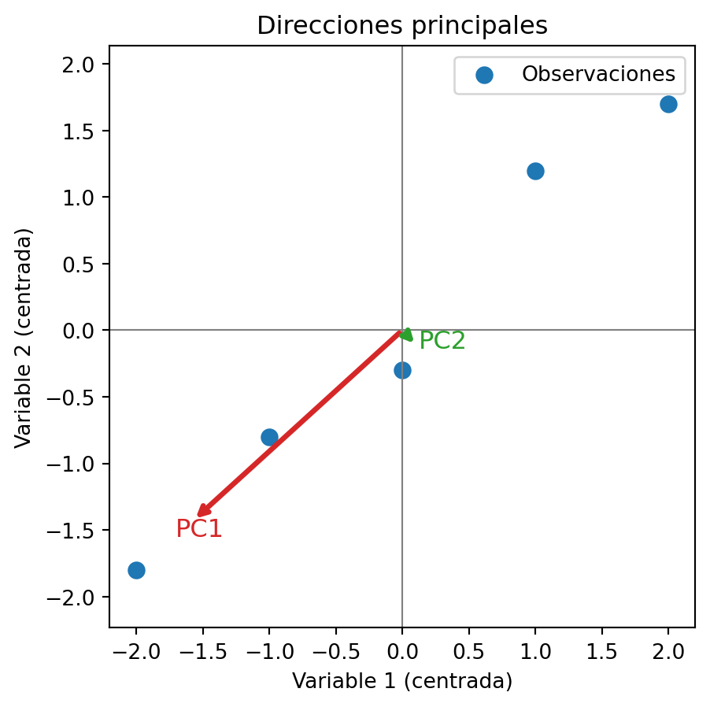

Código
Media de cada variable: [4. 2.8]
Datos centrados:
[[-2. -1.8]
[-1. -0.8]
[ 0. -0.3]
[ 1. 1.2]
[ 2. 1.7]]
Matriz de covarianza:
[[2.5 2.25 ]
[2.25 2.075]]PCA — día 2
2026-11-26
Queremos representar un conjunto de observaciones usando menos variables, procurando perder la menor cantidad posible de información.
Idea central: encontrar direcciones en las que los datos tengan la mayor varianza posible.
Sea \(\mathbf{X}\in\mathbb{R}^{n\times p}\) la matriz de datos. Cada fila es una observación y cada columna una variable.
La media de la variable \(j\) es
\[ \bar{x}_j=\frac{1}{n}\sum_{i=1}^{n}x_{ij}. \]
Definimos la matriz centrada:
\[ \mathbf{X}_c=\mathbf{X}-\mathbf{1}\bar{\mathbf{x}}^T. \]
Para dos variables aleatorias \(X\) y \(Y\),
\[ \operatorname{Cov}(X,Y) =\mathbb{E}\left[(X-\mu_X)(Y-\mu_Y)\right]. \]
La covarianza mide cómo varían conjuntamente:
Para datos centrados, la matriz de covarianza muestral es
\[ \boxed{ \mathbf{S}=\frac{1}{n-1}\mathbf{X}_c^T\mathbf{X}_c } \]
donde \(\mathbf{S}\in\mathbb{R}^{p\times p}\).
Nota: el factor \(1/(n-1)\) corresponde a la covarianza muestral usual.
Media de cada variable: [4. 2.8]
Datos centrados:
[[-2. -1.8]
[-1. -0.8]
[ 0. -0.3]
[ 1. 1.2]
[ 2. 1.7]]
Matriz de covarianza:
[[2.5 2.25 ]
[2.25 2.075]]En el ejemplo anterior,
Una covarianza positiva indica que las variables tienden a moverse en la misma dirección.
Tomemos una dirección unitaria \(\mathbf{w}\in\mathbb{R}^p\):
\[ \|\mathbf{w}\|_2=1. \]
La proyeccion de la matrix de covarianza en la dirección \(\mathbf{w}\) esta dada por
\[ \mathbf{z}=\mathbf{w}^T\mathbf{S}\mathbf{w}. \]
Queremos elegir \(\mathbf{w}\) para que las proyecciones tengan la mayor varianza posible.
El problema de PCA a una dimensión se traduce a encontrar \(\mathbf{w}^*\) tal que
\[ \boxed{ \mathbf{w}^* = \mathrm{argmax}_{\mathbf{w}}( \mathbf{w}^T\mathbf{S}\mathbf{w}), \quad\text{sujeto a}\quad \mathbf{w}^T\mathbf{w}=1. } \]
El problema es equivalente encontrar \(\mathbf{w}^*\) tal que$:
\[ \mathbf{w}^* = \mathrm{argmin}_{\mathbf{w}} \mathcal{L}(\mathbf{w},\lambda), \quad \mathcal{L}(\mathbf{w},\lambda) =\mathbf{w}^T\mathbf{S}\mathbf{w} -\lambda(\mathbf{w}^T\mathbf{w}-1). \] en donde \(\lambda\) es el multiplicador de Lagrange
Derivando \(\mathcal{L}(\mathbf{w},\lambda)\) respecto a \(\mathbf{w}\), e igualando a cero:
\[ 2\mathbf{S}\mathbf{w}-2\lambda\mathbf{w}=0. \]
Así,
\[ \boxed{\mathbf{S}\mathbf{w}=\lambda\mathbf{w}.} \]
La dirección que maximiza la varianza es un eigenvector de \(\mathbf{S}\) asociado al mayor eigenvalor.
Como \(\mathbf{S}\) es simétrica, sus eigenvalores son reales y sus eigenvectores pueden elegirse ortogonales.
Ordenamos los eigenvalores:
\[ \lambda_1\geq\lambda_2\geq\cdots\geq\lambda_p\geq 0. \]
Las componentes principales son direcciones ortogonales entre sí.
Para una matriz de covarianza simétrica usamos numpy.linalg.eigh.
eigenvalues, eigenvectors = np.linalg.eigh(S)
# eigh devuelve los eigenvalores en orden ascendente.
order = np.argsort(eigenvalues)[::-1]
eigenvalues = eigenvalues[order]
eigenvectors = eigenvectors[:, order]
print("Eigenvalores:", np.round(eigenvalues, 4))
print("\nEigenvectores (columnas):\n", np.round(eigenvectors, 4))Eigenvalores: [4.5475 0.0275]
Eigenvectores (columnas):
[[-0.7396 0.673 ]
[-0.673 -0.7396]]Cada columna de eigenvectors es una dirección principal. El primer eigenvector corresponde al eigenvalor más grande.
La primera componente apunta en la dirección de mayor dispersión. La segunda es perpendicular a ella.

Sea \(\mathbf{W}_k=[\mathbf{w}_1,\ldots,\mathbf{w}_k]\).
Las coordenadas de los datos en el nuevo sistema son
\[ \boxed{\mathbf{Z}=\mathbf{X}_c\mathbf{W}_k.} \]
Como \(\mathbf{X}_c \in \mathbb{R}^{n\times p}\), \(\mathbf{X}_c \in \mathbb{R}^{p\times k}\) y \(\mathbf{X}_c \in \mathbb{R}^{n\times k}\), pasamos de \(p\) variables originales a \(k\) componentes, con \(k<p\).
La varianza explicada por la componente \(j\) es \(\lambda_j\).
La proporción de varianza explicada (PVE) es:
\[ \boxed{ \mathrm{PVE}_j= \frac{\lambda_j}{\sum_{\ell=1}^{p}\lambda_\ell}. } \]
Esta métrica permite cuantificar qué fracción de la varianza total retienen las primeras componentes.
El umbral de 90% o 95% es una regla práctica, no una ley estadística.
Una vez proyectados los datos, podemos aproximarlos en el espacio original:
\[ \boxed{ \widehat{\mathbf{X}}= \mathbf{Z}\mathbf{W}_k^T =\mathbf{X}_c\mathbf{W}_k\mathbf{W}_k^T. } \]
Esta reconstrucción está centrada. Para regresar a las unidades originales, sumamos nuevamente la media:
\[ \widehat{\mathbf{X}}_{\mathrm{original}} =\widehat{\mathbf{X}}+\mathbf{1}\bar{\mathbf{x}}^T. \]
Cuanto menor sea \(k\), mayor será el error de reconstrucción.
Una medida natural es el error cuadrático medio por elemento:
\[ \boxed{ \operatorname{MSE} =\frac{1}{np} \left\|\mathbf{X}_c-\widehat{\mathbf{X}}\right\|_F^2. } \]
También podemos usar el error Frobenius, como vimos antes, PCA minimiza esta norma dado una reconstrucción de rango \(k\) (Teorema de Eckart-Young-Mirsky):
\[ \|\mathbf{X}_c-\widehat{\mathbf{X}}\|_F \]
En la clase anterior usamos la descomposición en valores singulares:
\[ \mathbf{X}_c=\mathbf{U}\mathbf{\Sigma}\mathbf{V}^T. \]
Entonces,
\[ \mathbf{S} =\frac{1}{n-1}\mathbf{X}_c^T\mathbf{X}_c =\mathbf{V}\frac{\mathbf{\Sigma}^T\mathbf{\Sigma}}{n-1}\mathbf{V}^T. \]
Importante: para PCA centrado, la SVD debe aplicarse a \(\mathbf{X}_c\), no a la matriz original sin centrar.
Si las variables están medidas en escalas muy diferentes, las de mayor escala pueden dominar la covarianza.
Una alternativa es estandarizar cada variable:
\[ x_{ij}^{*}=\frac{x_{ij}-\bar{x}_j}{s_j}, \]
donde \(s_j\) es la desviación estándar de la variable \(j\).
PCA sobre variables estandarizadas equivale a realizar PCA sobre la matriz de correlaciones.
La decisión depende del problema y debe justificarse.
PCA es útil, pero hay que recordar que:
Una visualización en dos dimensiones puede ser útil, pero no garantiza que las clases o grupos estén bien separados.
PCA | día 2